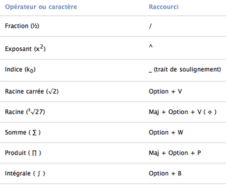

Grapher est un utilitaire livré avec Mac OS X qui est apparu dans la version 10.4. C'est un logiciel permettant de créer des graphes en 2D ou en 3D dans différents repères.
Il est capable d'exécuter de simples fonctions linéaires comme f(x) = ax en passant par les courbes paramétrées jusqu'à l'attracteur de Lorenz (et peut-être même bien plus compliqué :lol: ). On peut également changer les graphiques de couleurs et créer des animations. Quoi qu'il en soit si vous êtes au lycée et au-delà, même si cet outil est convivial, il est suffisamment complet pour votre niveau en maths. :)
Il mérite d'être mieux connu bien qu'il soit disponible uniquement sur Mac. De plus, quand on sait s'en servir, cet outil est grandement utile, c'est pourquoi je vais vous expliquer les bases de ce très bon logiciel Apple.
Le but de ce tutoriel est non seulement de vous montrer comment utiliser Grapher, mais aussi d'apprendre aux moins avancés deux ou trois choses sur les fonctions mathématiques par le biais de ce logiciel.
Prêt ? On peut commencer ? ... Oui ? Alors, c'est parti ! :pirate:
Je vais supposer que tout le monde ici a déjà vu des fonctions telles que les constantes f(x)=b, les fonctions linéaires f(x)=ax, les fonctions affines f(x) = ax+b, etc. Si ce n'est pas le cas, vous pouvez toujours utiliser celles citées ci-dessus en changeant les lettres a et/ou b par des chiffres. :p
De quoi est composée une fonction mathématique ?
Citation : Cours de maths : Fonctions
Une fonction possède un ensemble de départ D appelé domaine de définition, d'un ensemble d'arrivée A et d'une correspondance notée souvent f qui associe à chaque élément x de l'ensemble de départ un seul élément noté f(x) dans l'ensemble d'arrivée. Pour résumer, on écrit "f : D ightarrow A, x ightarrow f(x)".
Avec cela, vous êtes maintenant sûr de pouvoir utiliser Grapher un minimum. :)
Vous trouverez Grapher dans le dossier nommé Utilitaires. Voilà ce qu'on voit lorsqu'on l'ouvre.
Vous pouvez sélectionner soit des courbes en 2D soit des courbes en 3D. Pour l'instant, on n'utilisera que Courbe 2D. Ensuite vous avez le choix :
Par défaut
C'est le repère utilisé pour les maths « faciles » et qu'on va adopter tout au long de ce tutoriel.
Marges
C'est le même repère que pour le Par défaut avec une marge à tous les côtés.
Classique
Repère possédant un seul quadrant (et non cadran) et des marges. Il est toutefois possible d'être dans les nombres négatifs.
Polaire
Permet de travailler dans les coordonnées polaires. Repère utile, car plus facile à exprimer en termes d'angle et de distance que les coordonnées cartésiennes (les repères vus précédemment), là où des formules trigonométriques sont nécessaires. La conversion entre ces deux repères est donc possible.
Lin-Log
Crée sur l'axe x une échelle linéaire et sur l'axe y une échelle logarithmique (repère semi-logarithmique). Repère utile pour certaines grandeurs utilisant l'échelle logarithmique comme le bel (plus connu sous le nom de décibel qui est égal à 1/10 bel) ou l'échelle de Richter (qui, en fait, est une mesure dépassée et seulement adaptée aux tremblements de terre californiens).
Historique-Historique
Crée une échelle logarithmique sur l'abscisse et l'ordonnée (repère log-log). Utilisé, par exemple, pour la représentation de la période de certaines planètes.
Log polaire
C'est un repère polaire utilisant une échelle logarithmique pour la coordonnée radiale (la distance).
Blanc
No comment. :-°
On va prendre Courbe 2D et Par défaut, car c'est le choix le plus facile pour bien commencer. Par la suite, pour faire du concret, vous prendrez le repère le mieux adapté. Mais ça, vous l'avez compris tout seul. :p
Si je prends ton repère Par défaut et que je remarque qu'il me fallait une échelle logarithmique, je dois tout refaire, non ?
He bien non, vous pourrez toujours changer de repère même après avoir fait votre graphe. Il est également possible de changer la dimension, mais il vaut mieux faire le bon choix tout de suite, car pour certaines fonctions la dimension ne peut pas être changée si la fonction n'est elle-même pas changée...
Vous remarquez que c'est très instinctif. Pour écrire une équation il suffit de cliquer sur y= et de l'écrire dans la zone d'édition d'équation. Si comme sur cette image il y a marqué Aucune équation, c'est que vous avez cliqué en dessous du y= dans le panneau Equations. Il suffit juste de cliquer sur le y= et vous pourrez écrire votre équation...
Il n'y a même pas besoin de mettre le symbole "*" pour la multiplication, Grapher écrit l'équation comme si vous l'écrivez sur un papier et il ferme automatiquement les parenthèses. De plus, pour écrire des lettres grecques, on peut écrire par exemple "omega" pour qu'il la transforme en \omega et "Omega" pour sa majuscule.
Il peut y avoir certains problèmes à utiliser ces raccourcis, car on ne peut pas mettre de "^" ou de "´". Pour les majuscules, certains caractères ne fonctionnent pas comme "Gamma" et certaines lettres grecques sont difficiles à noter parce que comme epsilon et upsilon, elles possèdent la lettre grecque \psi (psi). Voici d'autres raccourcis que vous pouvez faire :

Lorsque je mets une racine et écris dessous, je n'arrive plus à en sortir, comment je fais ? :(
Comme pour les puissances ou les parenthèses, on arrive à sortir de là en cliquant au bout de l'équation ou en pressant sur la flèche droite du clavier, tout simplement.
Les boutons en haut à gauche sont indispensables.
Ils s'utilisent tous dans la zone du graphe, car notez que si l'on a coché l'outil Déplacer (la main), il n'y a pas besoin de recocher l'outil Sélection (la flèche) pour faire une action en dehors de la zone. Donc, le premier bouton sert à sélectionner les courbes, savoir quelle courbe correspond à quelle équation lorsque vous en avez plusieurs et les axes pour changer leurs paramètres. Cette dernière action, changer les paramètres des axes, sera vue plus tard.
Pour les boutons Réduire/agrandir... Rien à dire.
Centrer l'origine, utile pour revenir à l'origine lorsque vous avez voyagé loin avec l'outil Déplacer.
Egaliser les axes permet d'avoir les mêmes unités sur chaque axe.
Un autre outil aussi indispensable à la création de graphes est la palette d'équation (
) qui se trouve en haut à droite, tout au bout de la ligne d'équation. C'est ici que vous irez choisir vos lettres grecques ou vos opérations si vous n'utilisez pas de raccourcis.
Il est possible de faire certaines équations prémâchées avec certains de ces éléments. Il faut pour cela regarder tout en bas à gauche. Le bouton nommé Ajouter une nouvelle définition d'équation. En cliquant dessus, un menu contextuel apparaît.
Nouvelle équation permet, comme le bouton à gauche, d'ajouter une nouvelle équation en ayant seulement le y= comme base. Nouvelle équation à partir d'un modèle... est une option très utile au début, elle permet d'écrire la notation de l'équation.
On va faire un exemple avec une courbe paramétrée.
C'est quoi des courbes paramétrées et quelles sont les différences entre ces courbes et des fonctions normales ?
La différence entre une fonction « normale » et une courbe paramétrée est que pour une fonction « normale », pour un x donné, on a seulement aucune ou une seule valeur de y. Pour une courbe paramétrée, on peut par exemple tracer un cercle, car pour un paramètre t donné, on a un couple de valeurs (x, y).
Par exemple, en cliquant sur Nouvelle équation à partir d'un modèle..., puis Courbe cartésienne dans la partie Paramétrique et en remplaçant les cases vides...
Ici, le paramètre va de 0 à 100. Quand t=0, les coordonnées sont (1 ; 0), etc. On obtient donc une forme. Je ne vous montre qu'un exemple, car vous avez pu voir qu'il existe beaucoup de types d'équations. Néanmoins, il existe quelques exemples dans la barre de menus nommée Exemples. Vous pouvez vous amuser à décocher certaines équations pour voir qu'est-ce qui correspond à quoi. (Les flèches représentent les champs vectoriels, etc.)
Nouvel ensemble de points permet de faire des interpolations.
Nouveau groupe crée un groupe permettant d'arranger la zone Equations en déplaçant les équations dans le groupe. Le nom du groupe peut être changé à l'aide d'un clic sur le groupe et d'un Enter.
Maintenant que vous savez créer une équation et même plusieurs, on va apprendre à faire... Autre chose. :p Grapher permet non seulement de créer des équations, mais aussi de les définir par intervalles (morceaux), de poser des égalités et de mettre des zones de couleur. Tout cela se passe dans la zone nommée Equations. Cela vous rappelle quelque chose ? :-°
Les fonctions définies par morceaux
Une fonction peut être définie par morceaux grâce aux conditions. Ainsi on dira "Pour une condition donnée, si l'expression fait que la condition est vraie, alors trace le point, sinon trace le point de l'autre expression donnée (l'expression si la condition est fausse est facultative)". D'une façon générale, les notations possible sur Grapher sont :
y = condition ? expression si la condition est vraie : expression si la condition est fausse
Ou la même notation en substituant "?" par ":".
En employant la palette d'équation sous Conditions : y = {condition expression. Remarquez qu'on peut mettre plusieurs conditions grâce à l'accolade.
Pour donner un exemple, si on a comme fonction f(x) = cos(x), qui est une fonction périodique de période 2\pi, c'est-à-dire que pour tout réel x on a : cos(x+k2\pi)=cos(x) où k \in \mathbb{Z} représente le nombre de périodes qui décrivent un nombre entier de tours complets effectués sur le cercle trigonométrique, on pourra donc esquisser la fonction sur l'intervalle x \in [0;2\pi]. Pour réaliser cela, on remplace la condition et l'expression si la condition est vraie par les valeurs (ici, on n'a pas besoin d'expression si la condition est fausse), ce qui donne y= x \in [0,2\pi] ? cos(x).
Les égalités
Une égalité se rattache à une fonction. Pour créer une égalité, on fait Ajouter une nouvelle définition d'équation, puis on choisit une lettre (autre que x et y) suivit d'un égal à un chiffre ou une autre équation. On remarque l'égalité grâce au symbole "=" entouré de vert à la place du carré coché/décoché.
Exemple de deux équations complexes. N'hésitez pas à les tester. ;)
Les zones de couleur et l'Inspecteur
Pour les zones de couleur, il faut utiliser des notations mathématiques. Par exemple, si on veut faire ceci :
(on se demande bien pour quoi o_O ) on utilise comme notations mathématiques : x \in [0;5] \wedge y \in [0;5] \wedge x ot \in [2;3] \wedge y ot \in [2;3]. Ce qui signifie que x appartient à l'intervalle [0;5] et y appartient à l'intervalle [0;5] et x n'appartient pas à l'intervalle [2;3] et y n'appartient pas à l'intervalle [2;3]. Vous trouverez ces notations dans la palette d'équation ou dans le menu Edition, puis Caractères spéciaux... qui a comme raccourci "option (Alt)" + "commande (Pomme)" + T.
On peut aussi définir une zone comme x + y > 1 qui est coloriée tant que x et y sont supérieurs à 1. On peut également changer la couleur. Pour se faire, cliquez sur le bouton Inspecteur
situé en haut à droite. Un menu s'ouvre alors.
Il ne reste plus qu'à choisir la couleur et cliquer sur la flèche.
D'autres fonctions sont aussi disponibles comme l'opacité. Les options de l'Inspecteur dépendent de votre fonction, si c'est une droite vous pourrez la changer en une droite discontinue, etc.
Vous pouvez changer la couleur de vos axes en cliquant dessus. Des petits points apparaissent le long de l'axe. Ouvrez l'Inspecteur et vous verrez qu'il y a un menu pour la droite, pour l'axe, un format des marques de graduation et un format d'étiquette. Si vous double-cliquez sur un axe, un menu nommé Variable apparaît. Il permet de changer les propriétés de l'axe comme les limites de l'axe. Les propriétés du quadrillage peuvent aussi être modifiées en cliquant sur l'une des coordonnées où un chiffre est noté sur les axes.
En plus des fonctions vues précédemment, d'autres fonctions sont disponibles dans la barre de menus.
Il est possible d'écrire du texte en allant dans Objet, puis Insérer un texte ou encore en insérant n'importe quels objets (sauf la flèche), puis en double-cliquant dessus. Pour le texte et/ou les objets, vous pouvez prendre l'outil de sélection et le cacher derrière la zone Equation. L'objet se supprimera de lui-même. Vous pouvez vérifier. ;) Avec l'insertion de texte, vous pouvez le déplacer avec l'outil de sélection en cliquant sur celui-ci et pour l'agrandir/rétrécir cliquez sur un des petits carrés noirs.
Dans le menu Equation, il y a un article, Evaluation qui vous permet d'analyser votre fonction (dérivée, dérivée seconde, etc.), il vous est aussi possible de dériver ou d'intégrer une fonction. Cependant, Grapher ne réécrit pas la fonction dérivée ou intégrée, il signale seulement son action et dessine la nouvelle fonction.
Si vous cherchez à dériver en ayant la nouvelle fonction, il existe des programmes qui calculent votre dérivée. Calculs de dérivées.
Vous pouvez aussi créer des animations en allant sous Création d'animations... (Certaines actions n'étant possibles qu'en mode 3D.)
Si vous en avez assez d'être en 2D ou si vous voulez voir à quoi ressemble votre fonction dans l'espace, c'est dans Présentation que cela se passe. Il est possible de passer de 2D à 3D, mais pas avec n'importe quelle fonction (comme dit plus haut). Par exemple, il est tout à fait possible de passer en 3D avec une parabole ou une hyperbole, il n'est en revanche pas possible avec une courbe paramétrique 2D, il faut la mettre en 3D.
Pour changer de repère, direction Format, puis Modèle de courbe... ou Système de coordonnées... Enfin choisissez votre repère.
Maintenant que vous vous êtes familiarisés avec Grapher et que vous connaissez ses bases, je vais vous montrer comment concevoir des animations.
Pour commencer, créez une fonction. Disons f(x) = 2x+1. On débute doucement. ^^
Ensuite, je vous l'ai déjà dit, mais je vous le redis. :p Pour créer une animation allez dans le menu Equation, puis Création d'animation.... On obtient ceci :
Augmentez la durée d'animation et le facteur de zoom. Ici, j'ai mis une durée de cinq secondes et un facteur de zoom de 16%. Cliquez sur Créer l'animation.
Ouais, Ouais... J'ai fait la lecture et je m'en doutais que ce soit aussi nul... T'as pas mieux !? :colere2:
Je suis d'accord que ce n'est pas terrible, mais je vais me rattraper. ;)
Evidemment, ce n'est pas avec une petite fonction qu'on peut faire beaucoup de choses... C'est pourquoi je vous propose d'aller dans le menu Présentation et Passer en affichage 3D. :D Supprimez votre droite qui est devenue un plan, si ce n'est pas déjà fait. On va créer une fonction assez spéciale nommée Ruban de Möbius.
Tiens, ça à l'air nettement mieux, mais c'est quoi le ruban de Möbius ?
Haha, petite explication.
Citation : Wikipédia
En topologie, le ruban de Möbius (aussi appelé bande de Möbius ou anneau de Möbius) est une surface fermée dont le bord est homéomorphe à un cercle. Autrement dit, il ne possède qu'une seule face contrairement à un ruban classique qui en possède deux. Elle a la particularité d'être réglée et non-orientable. Cette surface a été décrite indépendamment en 1858 par les mathématiciens August Ferdinand Möbius (1790-1868) et Johann Benedict Listing (1808-1882).
Vous en voulez encore ? :p Vous pouvez aussi regarder cette vidéo assez étonnante. Ruban de Möbius.
Maintenant que vous connaissez les caractéristiques de ce ruban, je vais vous montrer comment faire le tour avec un point repère. Comme ceci :
Pour savoir comment faire cela, on est obligé de connaître les courbes paramétrées. Je vous en ai déjà parlé auparavant... Vous vous souvenez de la courbe de Moritz ? ;)
Voici le paramétrage du ruban :
\left[\begin{align}x\\y\\z\end{align} ight]=\left[\begin{align}\(2+t \cdot \cos(k \cdot u)) \cdot \cos(2 \cdot u)\\ (2+t \cdot \cos(k \cdot u)) \cdot \sin(2 \cdot u)\\ t \cdot \sin(k \cdot u) \end{align} ight], t=-1 ... 1, u =0... \pi Avec k entier relatif impair. k étant le nombre de demi-tour. Pour ma part, j'ai choisi k=3.
Ici, il y a deux paramètres. Le paramètre t pour la largeur du ruban et u pour sa longueur. On choisit t allant de -1 à 1 pour que le ruban ne soit pas trop large et u allant de 0 à \pi pour faire le tour. En effet, \pi radian valant 180°, mit dans l'équation cela donne 2 \cdot \pi radian valant 360°. Au fait, assurez-vous que vous êtes en mode radian et non pas en mode degré en allant dans Grapher et Préférences... ;)
Ensuite, on doit s'occuper du mobile. On va reprendre le même paramétrage, mais en donnant une valeur t précise. Vous pouvez choisir d'attribuer la valeur de 0, cela donnera l'équation d'un simple cercle. Le paramètre est au centre, mais il coupera votre ruban. Ou de remplacer t par -1 ou 1, le mobile parcourra entièrement le ruban en étant à son extrémité, comme sur ma vidéo. Vous pouvez également mettre l'intervalle de t allant de -1 à 1 ce qui donnera une droite. Ou de faire en sorte que le mobile soit sur le ruban et le parcourt sans le couper. Je vous laisse faire ça. :-°
Voici les équations que vous aurez au final :
La valeur de u dans la zone d'équation n'est pas importante, car on va la définir lors du paramétrage de l'animation.
Maintenant, vous pouvez vous amuser à changer les couleurs, la forme du mobile, etc. dans l'Inspecteur. Pour ma part, j'ai gardé les options initiales du mobile. Quant à la couleur de la figure, j'ai choisi, dans la liste déroulante de Couleur, l'option "chromatique". J'ai aussi enlevé les axes en faisant un clic droit dans la zone noire et en mettant Masquer les axes.
Le moment est venu de faire faire le tour au mobile. :D Pour cela, vous avez le choix. Si vous voulez seulement faire bouger le mobile avec une vitesse déterminée, cliquez sur le paramètre u dans la zone d'équation, puis allez dans Equation > Animation de paramètre.
Vous aurez ceci de nouveau :
Allez dans Réglages, le bouton le plus à droite, et changez les valeurs à votre aise. Vous pouvez voir l'aperçu en cliquant sur Lecture/Pause ou l'enregistrer avec le bouton Création de séquence et Enregistrer sous...
Si vous voulez également faire bouger le ruban, allez dans Equation, puis Création d'animation... Cochez le paramètre si vous voulez le faire bouger et choisissez la valeur initiale et finale. Ici, le mobile fera un tour si on met la valeur initiale à 0 et la valeur finale à 3.14. Pour la durée, faites de nouveau attention, ne mettez pas des minutes ! Deux tours en cinq secondes est une durée suffisante pour que la vitesse de la bille soit convenable, car si c'est trop rapide on n'y voit rien et si c'est trop lent on s'ennuie...
Pour l'orientation de la figure initiale ou finale, vous pouvez simplement la faire pivoter ou l'agrandir/rétrécir ou lui faire changer de place. Pour faire cela :
Pressez la touche Maj et montez/descendez la flèche pour agrandir/rétrécir l'image.
Faites un simple clic gauche sur une figure pour la faire pivoter sur l'abscisse (axe x) et/ou la cote (axe z) ou pressez, en plus du clic, la touche option (Alt) pour exécuter une rotation sur l'ordonnée (axe y).
Pressez la touche commande (Pomme) pour faire une translation.
Ces orientations ne s'appliquent pas uniquement lors de la création d'une animation, il est également possible d'orienter la figure directement sur le graphe en exécutant les mêmes actions.
Voilà, mon premier tutoriel est achevé. J'espère qu'il vous aura plu, de même que Grapher qui m'aide parfois bien pour mes maths. Je pense qu'il vous aidera tout autant. ;) Il suffit de lui demander ce que vous souhaitez, le plus dur est de savoir quoi faire. :p
Merci de m'avoir lu et si vous trouvez des améliorations à faire ou des fautes d'Aure Tograff orthographe et grammaticale à corriger, signalez les moi.